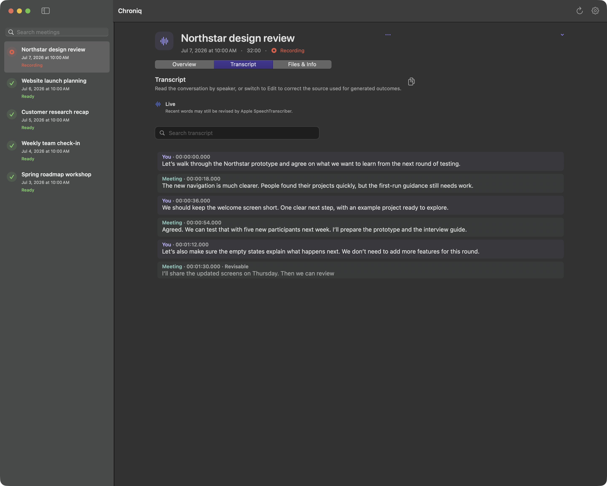

Durable progress
Processing state and partial work survive application restarts.

Record microphone and system audio on your Mac, transcribe locally, follow the conversation live, and create editable outcomes with Gemini or a local GGUF model.
macOS 15+ · Apple silicon · Live transcription on macOS 26+

Explicit recording
Local transcription
Inspectable archive
Record with intent
Chroniq begins only when you tell it to. Microphone and system audio remain separate, synchronized, and durably stored in an archive you can inspect.

Local by design
Apple SpeechTranscriber follows the conversation live on macOS 26+. NVIDIA Parakeet transcribes after recording on macOS 15+. Choose a local GGUF model for offline outcomes, or Gemini to process the editable transcript directly with your own API key. Audio stays on your Mac. Local processing never falls back to the cloud.
The conversation, as it happens
Apple SpeechTranscriber brings local live transcription to macOS 26+. Configure language assets once; Chroniq detects the meeting’s initial language, catches up and follows the conversation. You and Meeting stay distinct, with timestamps, live search and scroll you control.
Prefer to process afterwards? NVIDIA Parakeet remains available on macOS 15+. Both modes keep the original audio, so you can regenerate the transcript later.

Choose how your artifacts are made
Choose Gemini or run a compatible GGUF model locally with llama.cpp. Find and download models from public Hugging Face repositories inside Chroniq, or import your own GGUF files.
See download progress, pause and resume, and manage model storage in Settings. Downloads use the internet; installed local models generate artifacts offline. Google Drive publishing remains a separate choice.
The llama.cpp runtime runs in a sandboxed service. Model sources, file sizes and available license information are shown before download. Choose the size and context that suit your Mac.
Check the resource warning before choosing a model. Large models and long meetings can make a Mac with limited memory unresponsive. Settings show your hardware and estimated demand; you remain in control of model selection.

From conversation to clarity
Search and edit the timed transcript. Correct summaries, key points, decisions, actions and Facts directly, then copy one section or all outcomes together. Manual edits and their transcript provenance stay visible.


Optional Google Drive publishing
Connect Google, choose the folder, acknowledge what will be shared, and enable automation explicitly. Chroniq updates only the document tabs it owns.
Learn how Google data is handled in our Privacy Policy and review the Terms of Service.
Artifacts
The team reviewed the Northstar prototype and agreed to focus the next iteration on a clearer first-run experience.
Built for correction
Processing state and partial work survive application restarts.
Blocked prerequisites, retries, and failure scope stay visible.
Replace outputs or rebuild everything from authoritative audio—your choice.
Native on your Mac
A normal macOS window, available from the Dock and Command-Tab, with Settings attached to the workspace. The menu bar stays within reach when the window closes. Optionally launch at login; recording always starts with your explicit action.

A few practical answers
Apple silicon and macOS 26 or later. Select Apple SpeechTranscriber in Settings and download assets for the languages you use. The initial meeting language is detected automatically from those enabled languages. Parakeet supports transcription after recording on macOS 15 or later, with an explicit model download.
Yes. Audio transcription always runs on your Mac. Select a local GGUF model to generate outcomes with llama.cpp offline after installation. Model downloads contact Hugging Face or Apple’s asset services. Gemini and optional Google Docs publishing send the disclosed text content only when configured and requested; neither receives your audio.
Edit the transcript and every outcome, search the conversation, and copy individual sections or all artifacts. Regenerate outcomes from the current transcript, or regenerate everything from the two saved FLAC tracks. Explicit regeneration replaces manual edits in its stated scope.
Open the downloaded DMG and drag Chroniq into Applications. Eject the mounted volume and open Chroniq from Applications. The app and DMG are signed and notarized. Chroniq runs on Apple silicon with macOS 15 or later.